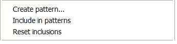

Pattern Creation
The menu items related to pattern creation are the following:

To create a pattern the simplest way, select a set of elements in a diagram and click 'Create pattern…'. This action starts the Pattern Creation wizard which is described below.
The creation process is based on the elements which are currently selected; optionally, the elements which have been previously marked via the 'Include in patterns' menu item are also covered. All those elements will become the 'pattern elements' of the pattern, that is, the elements that every instance of the pattern must possess. Note that when the Pattern Creation wizard finishes, the elements that were selected have become the first instance of the new pattern.
Marking elements for pattern creation
Creation wizard tab 1: Pattern properties
Creation wizard tab 2: Pattern content
Creation wizard tab 3: Advanced properties